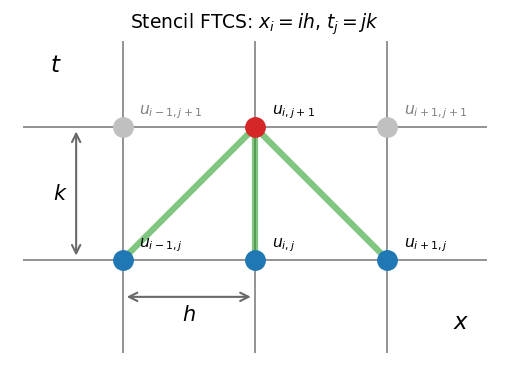
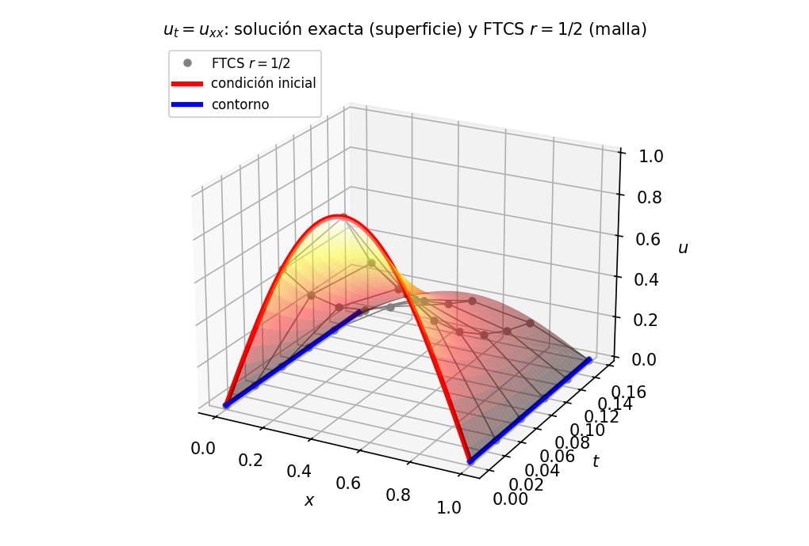
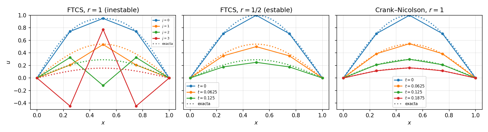
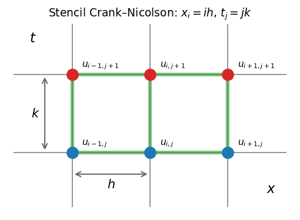
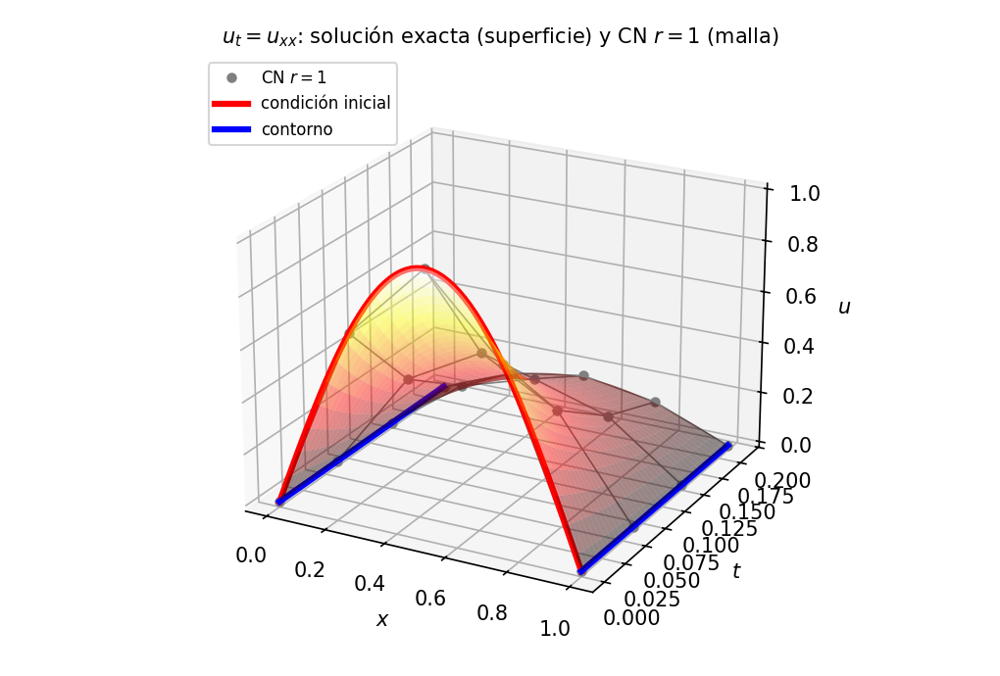

Las EDP parabólicas describen fenómenos que evolucionan en una dirección privilegiada (generalmente el tiempo) a partir de una condición inicial, con condiciones de contorno en el espacio. Su ejemplo canónico es la ecuación de difusión.
\[u_t = D\,u_{xx}, \quad x \in [0, 1],\; t > 0\]
Esta ecuación lleva una distribución inicial \(u(x, 0)\) hacia el equilibrio. El estado final es la solución de la elíptica asociada (\(u_{xx} = 0\), una recta entre las temperaturas de los extremos). El calor es solo el ejemplo físico habitual, la misma ecuación modela la difusión de un contaminante o el transporte de momento por viscosidad. Numéricamente combina los dos mundos de los capítulos anteriores, diferencias finitas en el espacio (como en PVF) + marcha en el tiempo (como en PVI).
Notación: \(h\) = paso espacial, \(k\) = paso temporal, \(u_{i,j} \approx u(x_i, t_j)\) — convención de EDP; aquí \(j\) recorre el tiempo, no una segunda dirección espacial como en Elípticas.
Discretizando \(u_{xx}\) con la diferencia centrada \(\mathcal{O}(h^2)\) y \(u_t\) con Euler hacia adelante \(\mathcal{O}(k)\) se obtiene el esquema FTCS (Forward Time, Centered Space):
\[\frac{u_{i,j+1} - u_{i,j}}{k} = D\,\frac{u_{i+1,j} - 2u_{i,j} + u_{i-1,j}}{h^2}\]
Definiendo el número de malla \(r = D\,k/h^2\), la actualización es explícita y local:
\[{\color{#d62728}u_{i,j+1}} = {\color{#1f77b4}u_{i,j}} + r\,\left({\color{#1f77b4}u_{i+1,j}} - 2{\color{#1f77b4}u_{i,j}} + {\color{#1f77b4}u_{i-1,j}}\right)\]

La evolución es una marcha por capas temporales — el mismo «paso a paso» de Euler en PVI:
Resolver
\[u_t = u_{xx}\]
con condición inicial \(u(x,0) = \sin(\pi x)\) y condiciones de contorno \(u(0,t) = u(1,t) = 0\).
Sobre la malla \((x, t)\) con \(h = 0.25\) y \(k = 0.03125\) (es decir, \(r = k/h^2 = 1/2\)), el esquema solo recibe datos en los bordes y calcula todo lo demás:

La solución exacta \(u(x,t) = e^{-\pi^2 t}\sin(\pi x)\) — una joroba que decae sin cambiar de forma — sirve de referencia para comparar lo que produce cada esquema.
El esquema FTCS es condicionalmente estable. El número de malla \(r = D\,k/h^2\) de la actualización debe cumplir
\[\boxed{r \le \frac{1}{2}}\]
Es la misma idea que el límite \(h < 2/\lambda\) de Euler en Estabilidad, ahora aplicada a cada modo espacial de la discretización. Los modos de alta frecuencia en \(x\) (los «dientes de sierra» entre nodos vecinos) son los que divergen primero. En la práctica esto obliga a \(k\) del orden de \(h^2\). Hay que recordar que refinar la malla espacial a la mitad cuadruplica el número de pasos temporales.
La figura siguiente muestra el ejemplo guía en tres escenarios:

El defecto de FTCS está en el tiempo. Euler adelante es solo \(\mathcal{O}(k)\). Crank–Nicolson evalúa la derivada espacial como promedio del instante viejo y el nuevo — la regla del trapecio en el tiempo.
\[\frac{u_{i,j+1} - u_{i,j}}{k} = \frac{D}{2}\left[\frac{u_{i+1,j} - 2u_{i,j} + u_{i-1,j}}{h^2} + \frac{u_{i+1,j+1} - 2u_{i,j+1} + u_{i-1,j+1}}{h^2}\right]\]
Reordenando, las incógnitas en \(t_{j+1}\) quedan a la izquierda:
\[-\frac{r}{2}\,{\color{#d62728}u_{i-1,j+1}} + (1+r)\,{\color{#d62728}u_{i,j+1}} - \frac{r}{2}\,{\color{#d62728}u_{i+1,j+1}} = \frac{r}{2}\,{\color{#1f77b4}u_{i-1,j}} + (1-r)\,{\color{#1f77b4}u_{i,j}} + \frac{r}{2}\,{\color{#1f77b4}u_{i+1,j}}\]

El esquema es implícito porque cada ecuación acopla las tres incógnitas vecinas de la capa \(j+1\) (las rojas de la fórmula). Ninguna se puede calcular por separado como en FTCS y hay que resolver toda la fila junta. No es, sin embargo, el sistema global como en el caso de las Elípticas donde todas las incógnitas de la grilla se acoplaban de una vez. Aquí el sistema involucra solo una capa temporal por paso — se resuelve la fila \(j+1\) y se marcha a la siguiente. Además es tridiagonal — cada ecuación solo toca los vecinos inmediatos, el mismo patrón local del MDF de PVF — y se resuelve de forma sencilla. A cambio se obtiene:
Estabilidad incondicional — no existe una cota superior de \(r\) para evitar divergencia. Sin embargo, valores grandes pueden producir oscilaciones no físicas en modos de alta frecuencia.
Precisión \(\mathcal{O}(k^2 + h^2)\) — el paso temporal se elige por precisión, no por estabilidad.
Retomamos el ejemplo guía
\[u_t = u_{xx}\]
con condición inicial \(u(x,0) = \sin(\pi x)\) y condiciones de contorno \(u(0,t) = u(1,t) = 0\). Lo resolvemos sobre la misma malla \(h = 0.25\), con tres nodos interiores de valores iniciales \(u_{1,0} = 0.7071\), \(u_{2,0} = 1\), \(u_{3,0} = 0.7071\), pero ahora con \(k = 0.0625\). El paso que hacía diverger a FTCS. Para referencia, la solución exacta es \(u(x,t) = e^{-\pi^2 t}\sin(\pi x)\).
Con \(r = 1\) el lado derecho se reduce a \(\tfrac{1}{2}(u_{i-1,j} + u_{i+1,j})\) y cada paso resuelve el sistema
\[\begin{bmatrix} 2 & -0.5 & 0 \\ -0.5 & 2 & -0.5 \\ 0 & -0.5 & 2 \end{bmatrix} \begin{bmatrix} u_{1,j+1} \\ u_{2,j+1} \\ u_{3,j+1} \end{bmatrix} = \frac{1}{2}\begin{bmatrix} u_{0,j} + u_{2,j} \\ u_{1,j} + u_{3,j} \\ u_{2,j} + u_{4,j} \end{bmatrix}\]
La matriz es la misma en todos los pasos. Cada fila es la ecuación de un nodo interior y los coeficientes \(1+r\) en la diagonal y \(-r/2\) en las adyacentes no dependen ni de la posición ni del instante. Se factoriza una vez y se reutiliza en todos los pasos. Lo que cambia es el lado derecho, que se arma con los valores conocidos de la capa \(j\). Cuando un vecino cae en el borde su valor viene del contorno (aquí \(u_{0,j} = u_{4,j} = 0\)).
Tabla de Crank–Nicolson con los valores del nodo interior \(u_2\) en diferentes tiempos:
| \(t_j\) | \(u_2\) (CN) | Exacta \(u_2\) |
|---|---|---|
| 0.0625 | 0.5469 | 0.5396 |
| 0.125 | 0.2991 | 0.2912 |
| 0.1875 | 0.1636 | 0.1572 |

La solución obtenida por Crank–Nicolson es estable donde FTCS explotó y encima más preciso que el FTCS estable (error ~1.5% vs ~10%) y con la mitad de pasos.
| Propiedad | FTCS (explícito) | Crank–Nicolson (implícito) |
|---|---|---|
| Actualización | \(u_{i,j+1}\) directo de vecinos en \(t_j\) | Sistema tridiagonal por paso (Thomas, \(\mathcal{O}(N)\)) |
| Estabilidad | \(r \le 1/2\) (condicional) | Incondicional; no siempre monótona |
| Precisión | \(\mathcal{O}(k + h^2)\) | \(\mathcal{O}(k^2 + h^2)\) |
| Coste por paso | \(\mathcal{O}(N)\) aritmética pura | \(\mathcal{O}(N)\) resolución de sistema |
| Análogo en EDO | Euler adelante | Regla trapezoidal implícita |
El patrón se repite, explícito = actualización directa con límite de estabilidad; implícito = sistema por paso sin ese límite — la misma conclusión de Estabilidad para EDO rígidas. La difusión es intrínsecamente «rígida» en el espacio donde los modos de alta frecuencia decaen muy rápido (\(e^{-D\beta^2 t}\)) y son ellos los que fijan el techo \(r \le 1/2\) del esquema explícito, aunque ya hayan desaparecido de la solución.
Comprueba tu comprensión. Para \(D = 1\) y \(h = 0.1\), ¿cuál es el mayor \(k\) permitido por FTCS? ¿Cuántos pasos hacen falta para llegar a \(t = 0.1\) con FTCS y con CN a \(k = 0.01\)?